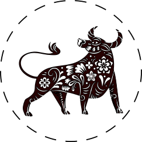
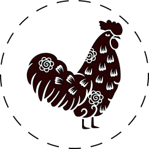

El dragón es el hermano kármico de la serpiente. Al igual que en la vida real, cambiará de piel durante el próximo año, luego de haber atravesado un período positivo durante la época del Conejo de Agua. Su objetivo principal para lo que viene será el de reconciliarse consigo mismo.
Compatible con:
  VOLVER